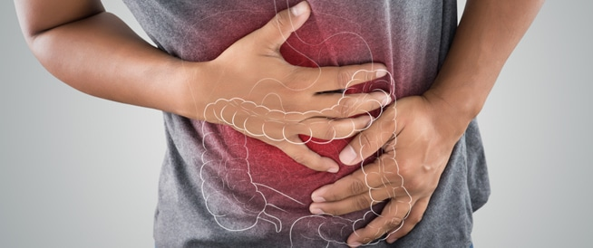

5/يناير 2022
ما هو مرض السكري؟ يحدث مرض السكر عندما يكون الجسم غير قادر على إفراز هرمون الانسولين الذي يعمل
علی حفظ مستوی السكر في الجسم أو لا يستطيع الانسولين المفرزة العمل في كسر السكر بسبب مقاومة الجسم
للانسولين.
حذّر أطباء متخصصون في علاج ”السكري”، من خطورة تناول الوجبات الجاهزة ”دليفري“، والمياه الغازية،
بكثرة، مشيرين إلى إن أي مواطن يستطيع بسهولة التأكد من إصابته بالمرض، ليتخذ إجراءات العلاج عبر
الطبيب المعالج، من خلال بعض الأعراض التي يشعر بها، وتظهر في جسده.
وقال الأستاذ الدكتور هشام الحفناوي، أخصائي ومدير معهد السكر في مصر، إن أبرز الأعراض التي تؤكد
الإصابة بالمرض دون مفاجأة أو صدمة الطبيب، تتمثل في التبول الزائد، بغض النظر عن كمية المياه
المتناولة، والعطش الزائد أيضًا، على فترات بسيطة، وتناول الأطعمة بكثرة، وتزامن زيادة الأطعمة
المتناولة مع نقص في الوزن

يهو التهاب في ممرات الهواء يحدث عندما يبالغ الجهاز المناعي في ردة الفعل -عن طريق الخطأ- تجاه عامل
مثير للحساسية مثل حبوب اللقاح أو العدوى الفيروسية؛ مما يؤدي إلى ظهور أعراض حساسية الصدر.
يتسبب هذا الالتهاب في تورم وضيق الممرات الهوائية، ومن ثم صعوبة تدفق الهواء خلالها؛ فينتج عن ذلك
سعال مصحوب ببلغم، وضيق في التنفس، وربما يصاحبه صوت أزيز بالصدر..

لأمراض الجهاز الهضميّ الوظيفية والقولون العصبي عادةً طابع مزمن تتخلله فترات تتفاقم فيها الأعراض
وأخرى من الهدوء، مما يُسبب معاناة كبيرة تمس بجودة حياة المريض.
عادةً عندما يخضع الشخص لفحص حول أمراض الجهاز الهضمي الوظيفية تكون النتائج سليمة، أي أنها لا
تُظهر أي دليل موضوعي على خلل تشريحي أو اضطراب بيوكيميائي..

التهاب المفاصل هو التهاب يمكن أن يصيب الركبتين، أو مفاصل كفّ اليد، أو قسمًا من العمود الفقري،
النوعان الأكثر انتشارًا من التهاب المفاصل، هما: الفـُصال العظمي، والتهاب المفاصل الروماتويد,
الوجع والتيبّس في المفاصل هي الأعراض الأساسية لالتهاب المفاصل.
يوجد أنواع أقل انتشارًا من التهاب المفاصل قد تكون نتيجة لمشكلات طبية أخرى تصيب أجزاءً أخرى من
الجسم، مثل: مرض الذِّئبة الذي قد يصيب الكلى والرئتين والمفاصل، ومرض الصُّداف (Psoriasis) الذي هو
مرض جلديّ بالأساس يؤثر أحيانًا على المفاصل أيضًا
جرثومة المعدة هي نوع من البكتيريا الحلزونية ولها العديد من الأعراض والأسباب.. تعرفوا عليها وعلى
كيفية علاج جرثومة المعدة.
جرثومة المعدة عبارة عن نوع من البكتريا الحلزونية التي تصيب جدران المعدة، وتتسبب في الكثير من
الأمراض التي تصيب المعدة ومنها الإصابة بالقرحة، وتتسبب جرثومة المعدة في أعراض قوية ومزمنة؛ وقد
تتشابه الأعراض مع أعراض قرحة المعدة.
تُعد المرارة أشبه بكيس يبلغ طوله نحو 10 سم يتواجد على السطح السفلي للكبد، وتتمثل وظيفتها في تركيز
الصفراء أو ما يسمى عصارة المرارة التي يفرزها الكبد من خلال امتصاص الماء والصوديوم.
عند الأكل تتقلص المرارة ما يؤدي إلى انتقال سائل الصفراء منها إلى الأمعاء الدقيقة، ما يساعد على
تحليل الطعام المهضوم.
يحدث التهاب المرارة في الغالب عند وجود حصى في جسم المريض، ما يسبب انسداد في الممر الواصل بين
المرارة والأمعاء، فيتراكم سائل الصفراء داخل المرارة ما قد يسبب التهاب فيها.
الكولسترول (Cholesterol) هو مركب موجود في كل خلية من خلايا الجسم، ويقوم ببناء خلايا جديدة، لكن
إذا كان مستوى الكولسترول في الدم مرتفعًا فمعنى هذا أن ترسبات دهنية ستتكون داخل جدران الأوعية
الدموية وستعيق هذه الترسبات في النهاية تدفق الدم في الشرايين.